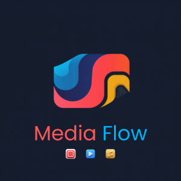
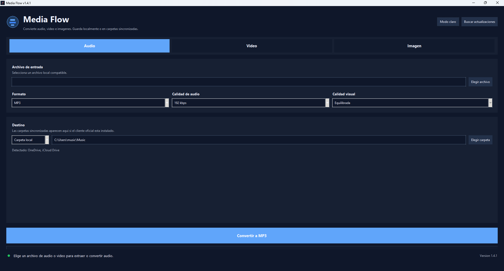
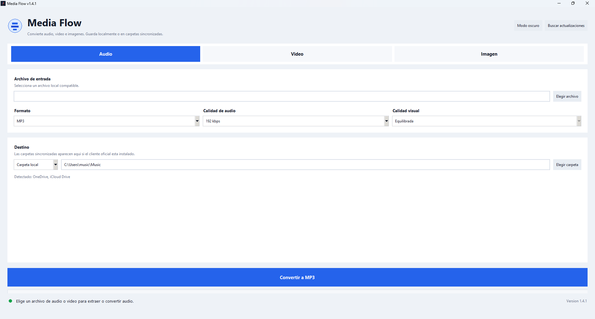

Audio
Convierte a MP3, M4A, WAV, FLAC y OGG con calidad configurable.

Media FlowConvertidor local para Windows
Convierte audio, video e imagen a formatos comunes desde una app rapida, clara y pensada para archivos locales.

Formatos
Convierte a MP3, M4A, WAV, FLAC y OGG con calidad configurable.
Exporta videos a MP4, MOV, WEBM y MKV para uso personal o profesional.
Cambia imagenes entre PNG, JPG, WEBP y BMP sin salir de la app.
Flujo rapido
Media Flow guarda tus preferencias, muestra informacion del archivo cuando `ffprobe` esta disponible y permite convertir varios archivos con el mismo formato y calidad.
Elige Audio, Video o Imagen.
Selecciona uno o varios archivos locales.
Define formato, calidad y carpeta de salida.
Capturas

Privacidad
Media Flow no requiere cuentas, no lee credenciales del navegador y no sube archivos a servidores propios.
Si guardas en OneDrive, Google Drive o iCloud Drive, la app escribe en la carpeta local sincronizada y el cliente oficial se encarga del resto.
Descarga
Descarga el instalador para Windows o usa la version portable si prefieres una carpeta sin instalacion.